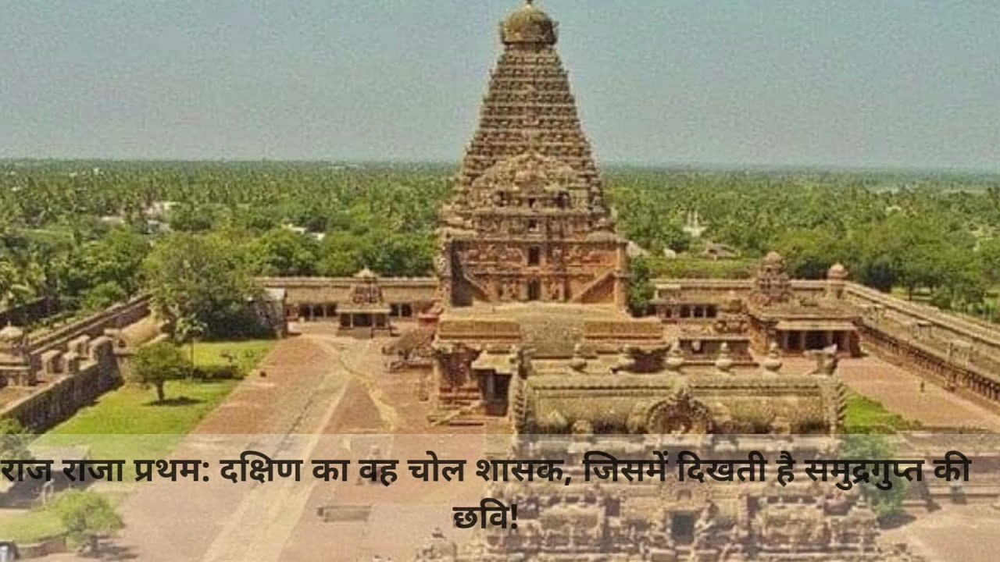
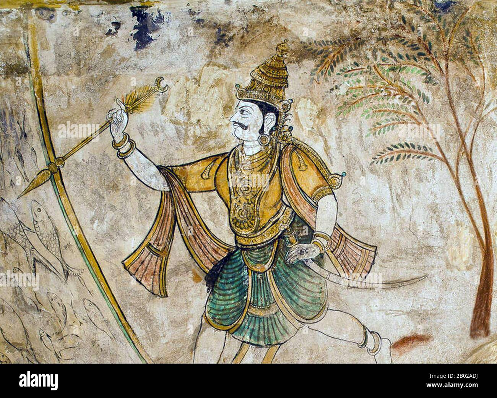

Raja Raja Cholan was the first to assume the title “ Mummudi Chola Deva”( being adorned with three crowns of Chola, Chera and Pandya) at a very young age. Raja Raja Cholan’s first praised victory was the acquisition of Kerala country which was ruled by the Cheras. The historic literary works like Thiruvalangadu plates and the Meykkirtti states the capture of Madurai and conquer of Pandya King Amarabujanga.
 